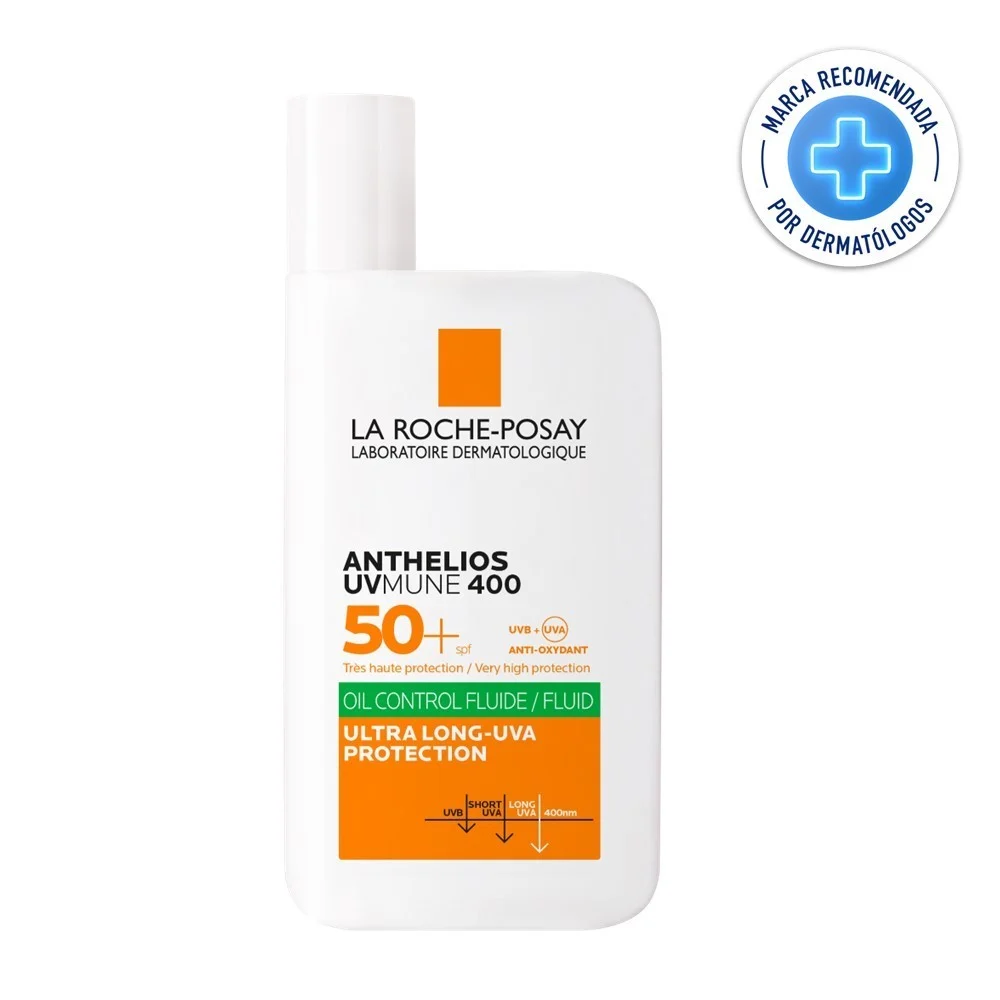
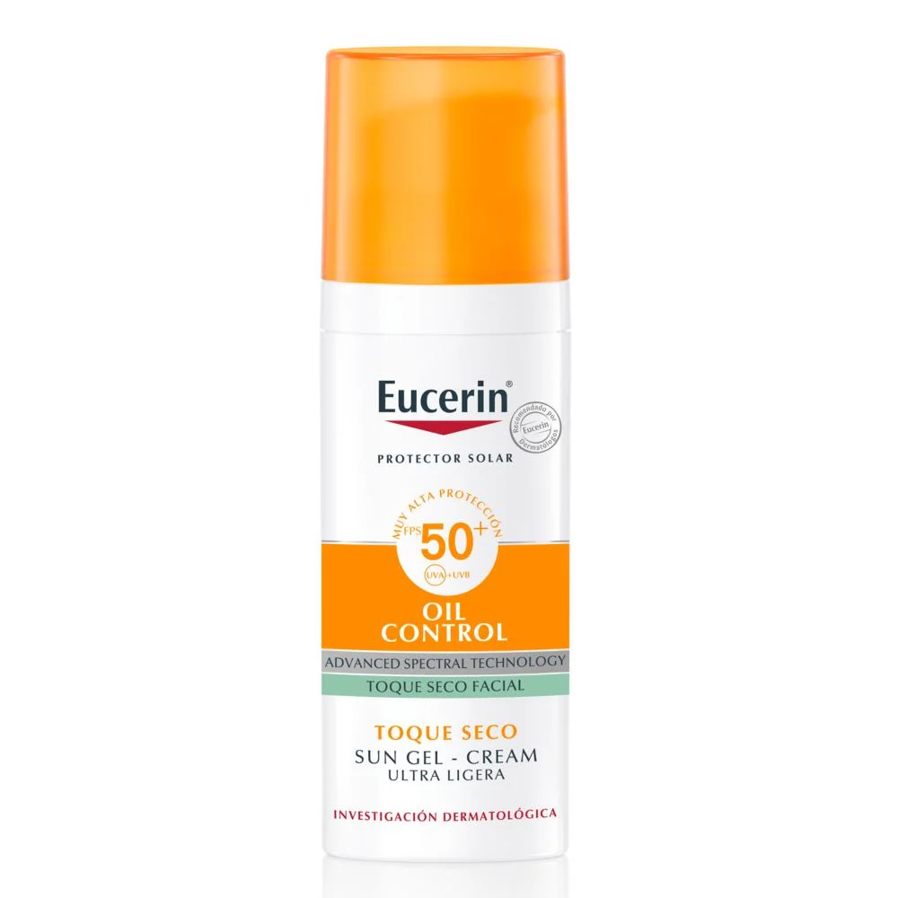
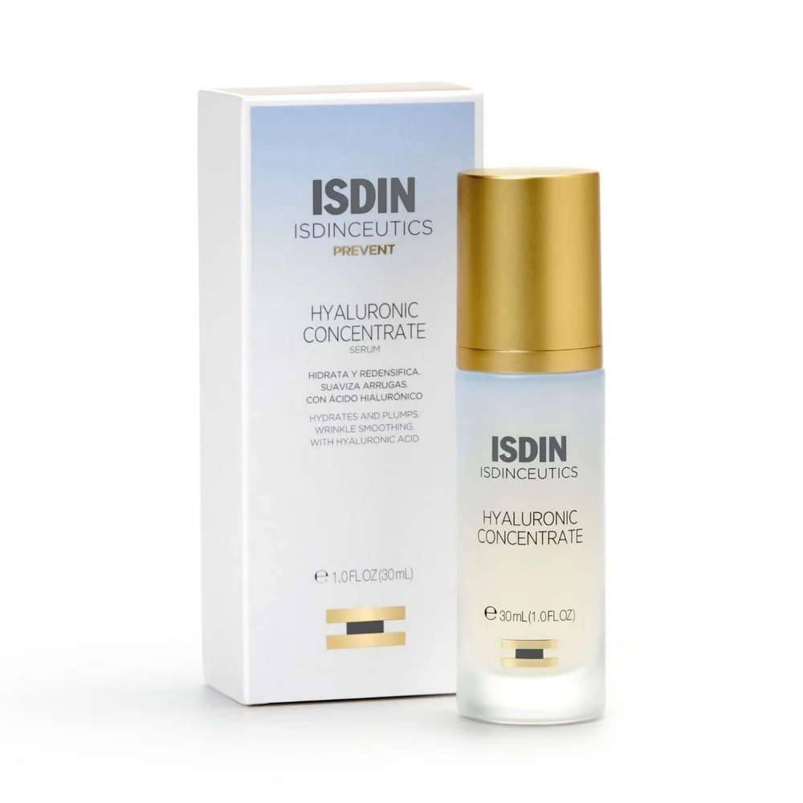
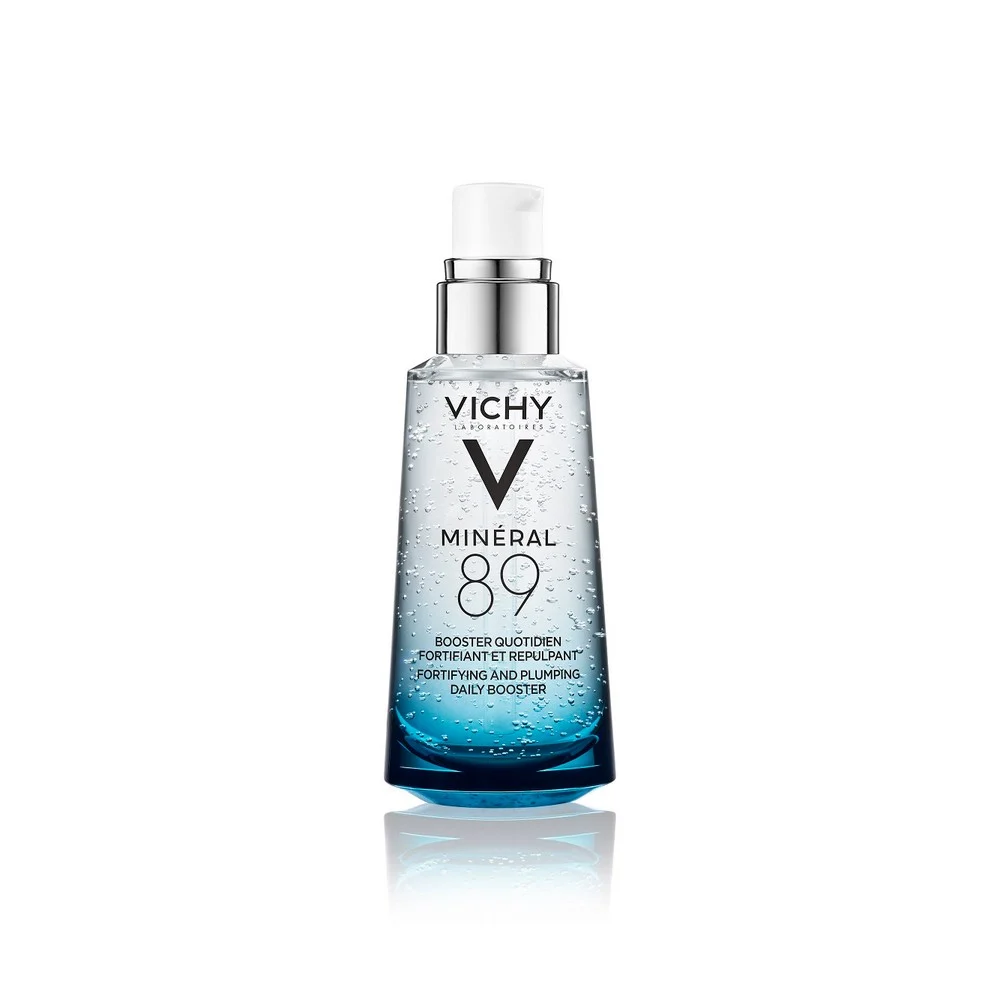
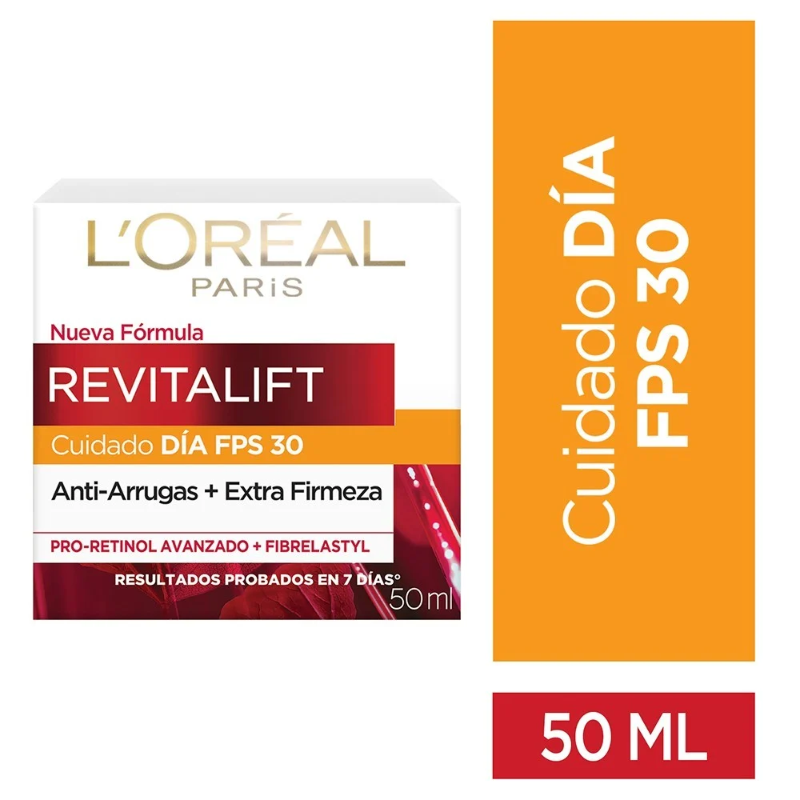
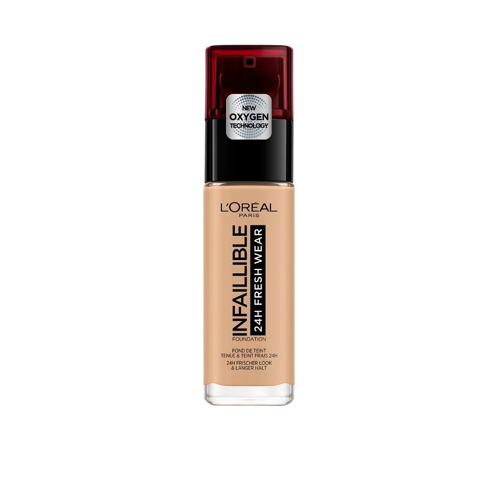

Producto: Protector Solar Rostro Anthelios UV Mune 400 Oil Control Fluid FPS50+ 50 ml
Precio : $24.990

Gel crema que matifica y controla el sebo en la piel. Protege el rostro de los daños más profundos. Ultra fotoprotección y ultra resistencia
Producto: Protector Solar Facial Gel Crema Oil Control FPS 50+ 50ml
Precio : $23.990

EUCERIN SUN FACE OIL CONTROL FPS 50+ es un protector solar facial de rápida absorción, diseñado específicamente para proteger las pieles grasas y con imperfecciones, con efecto antibrillo por 8 horas.
Producto: Isdinceutics Hyaluronic Concentrate 30 mL
Precio : $37.990

Sérum facial ligero ultrahidratante con Ácido hialurónico
Producto: Serum Fortificador Mineral 89 Booster 50 ml
Precio : $33.990

Minéral 89 es un concentrado con ácido hialurónico, desarrollado para mujeres y hombres que necesiten un cuidado profundo y reparador en su piel.
Además, su textura ultra ligera logra absorberse rápidamente en la piel, sin dejar una sensación grasa o pegajosa, para un efecto inmediato de hidratación y suavidad y una piel más saludable todos los días. Formulado sin siliconas, sin perfume y sin alcohol.
Producto: Revitalif Crema Rostro Cuidado Día Fps 30 Pro-Retinol Elasti-Flex 50 mL
Precio : $13.290

La crema de día Revitalift de L´Oreal Paris ha sido elaborada con Elasti-flex y Pro-retinola para una piel más elástica y firme. Al ser elaborada con estos poderosos ingredientes, lucirás una piel más densa, elástica, firme y será estimulada para una reconstrucción cutánea. Además con FPS 30 tu piel estará protegida de los rayos UVA/UVB.
Producto: Infalible Base de Maquillaje 24H Fresh Wear 140 Golden Beige 30 mL
Precio : $14.490

Nueva Base Infallible 24H Fresh Wear: Larga duración con una cobertura impecable sin efecto máscara, por hasta 24hrs. Nueva fórmula a prueba de agua, resiste al roce y al sudor. Ahora aún más fresca, más ligera y más duradera, para una cobertura impecable, como recién aplicada, durante todo el día. Disponible en 9 tonos. ¡Elige el tuyo!